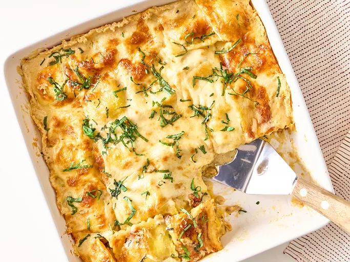

Easy One Pan Creamy Baked Ravioli
Home

Recipe description
This easy one-pan creamy baked ravioli dish uses store-bought Alfredo sauce and frozen ravioli for convenience and ease. It's wonderfully creamy and rich.
Ingredients
- 1 (25-ounce) package frozen cheese ravioli
- 3 1/2 cups store-bought Alfredo sauce
- 1 pound Italian sausage, cooked and crumbled
- 3 cups baby spinach
- 1/2 cup chopped marinated sundried tomatoes
- 2 cups shredded mozzarella cheese, divided
- 1/2 cup freshly grated Parmesan cheese, divided
Steps
- Preheat oven to 350 degrees F (180 degrees C). Lightly grease a 3 quart baking dish with cooking spray. Spread about 1/2 cup sauce on the bottom of the dish and arrange half of the ravioli in a single layer over the sauce.
- Top with cooked sausage, spinach, and sundried tomatoes. Pour 1 1/2 cups of alfredo sauce over the spinach mixture. Sprinkle with half of the mozzarella and Parmesan cheese and top with the remaining ravioli in a single layer.
- Pour over remaining sauce and top with remaining mozzarella and Parmesan cheeses.
- Cover and bake for about 1 hour, uncovering during the last 15 minutes, until golden brown around the edges and bubbly. Let stand 10 minutes before serving.